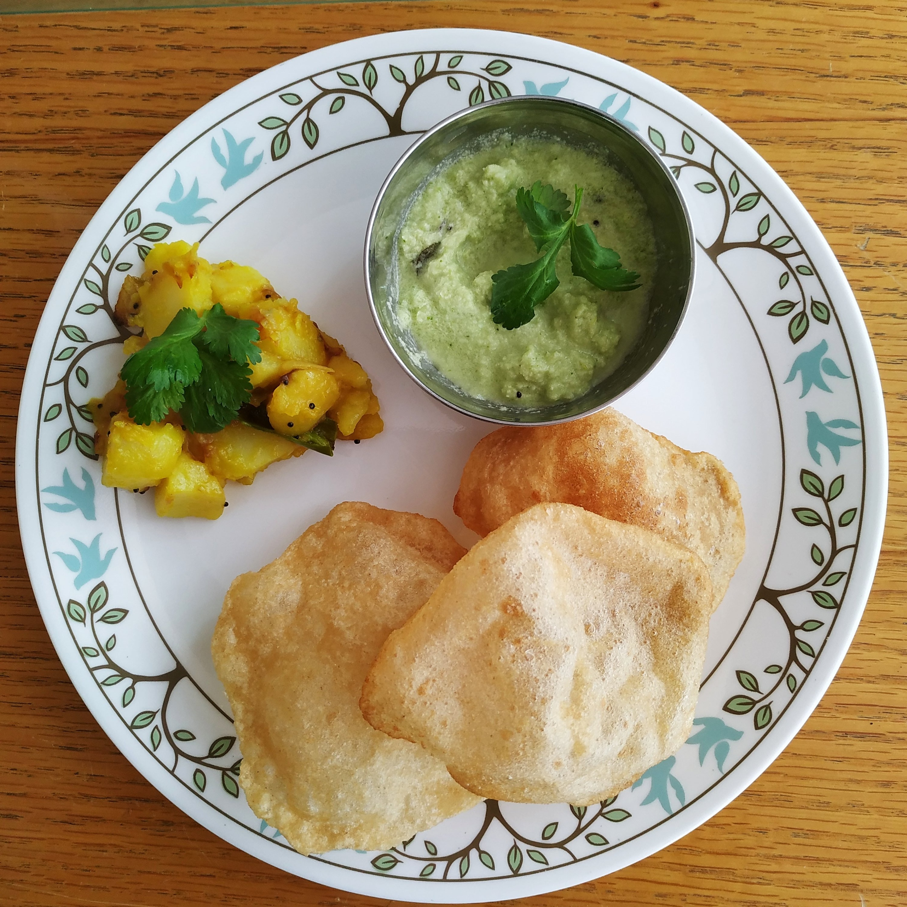
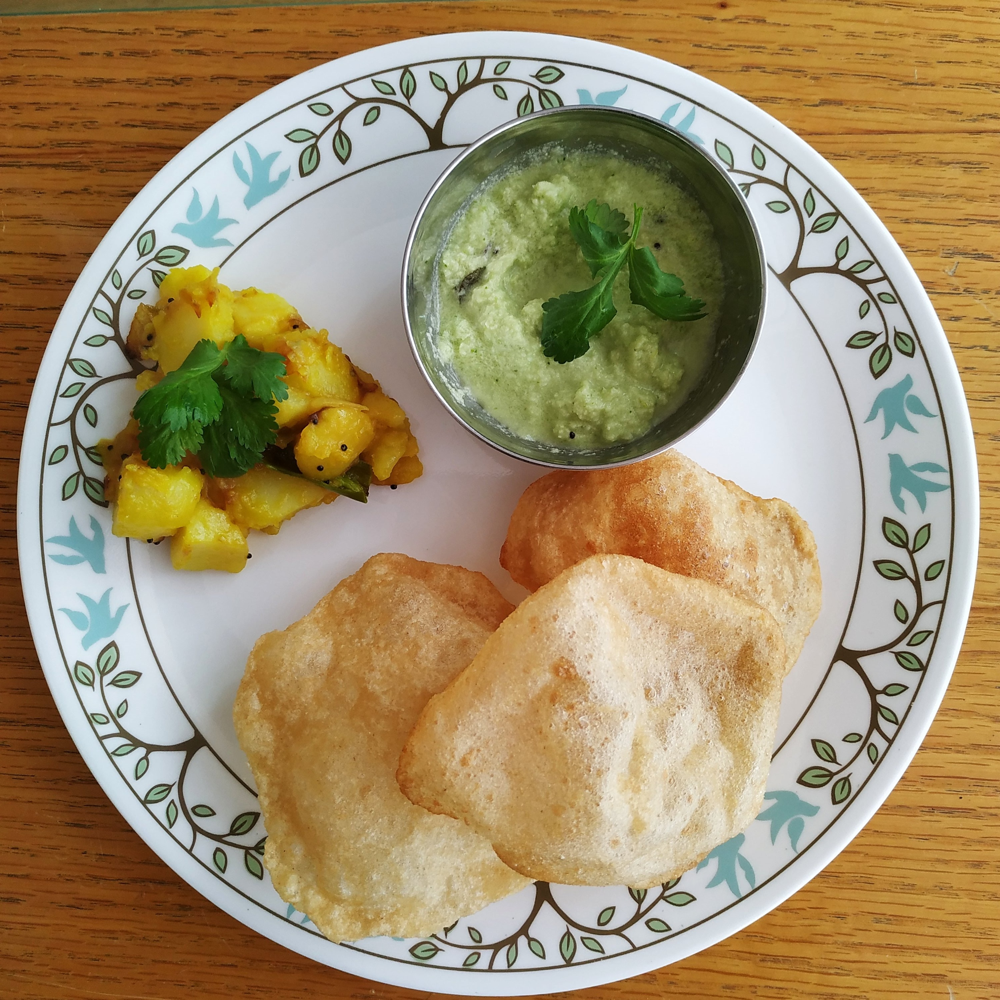

100%
An Indian Recipe's Guide
A perfectly curated guide of Indian dishes for students, by International students. As we understand the time and resource crunch that students go through, the recipes suggested are short,simple yet delicious.
So,Whats Cooking?
Understanding the cuisine:Indian food has been prepared for more than 5000 years. Each region's food is influenced by its own customs, beliefs, and culture.Indian food has been influenced by a variety of cuisines, including Persian, Chinese, and Mongolian. The distinctive spice blending that consistently gives Indian cuisine its flavor and scent has remained a recurring theme over the ages.
 

ADVICE TO GET YOU STARTED
Read about tips/tricks directly to manage time, shop groceries and save money on your next meal prep.

Indian Diet Benefits
Let's examine the typical elements of an Indian diet:
- High in a variety of fruits and vegetables, including spinach, aubergines, and mangoes.
- High in a number of herbs and spices, including coriander and ginger.
- Minimal saturated fat.
- A lot of fiber due to large amounts of vegetables used.
About Us
Portion Play is a one stop destination for all sorts of Indian home cooked meal guides and recipes, drawing inspiration from traditions passed on from centuries on. Portion Play as a blog is here to help you cook delicious meals with less stress and more joy. The site offers recipes and cooking advice to International students to help them have "piece of home" where-ever they might be. This is your turn to become the "Master-chef" of your kitchen.